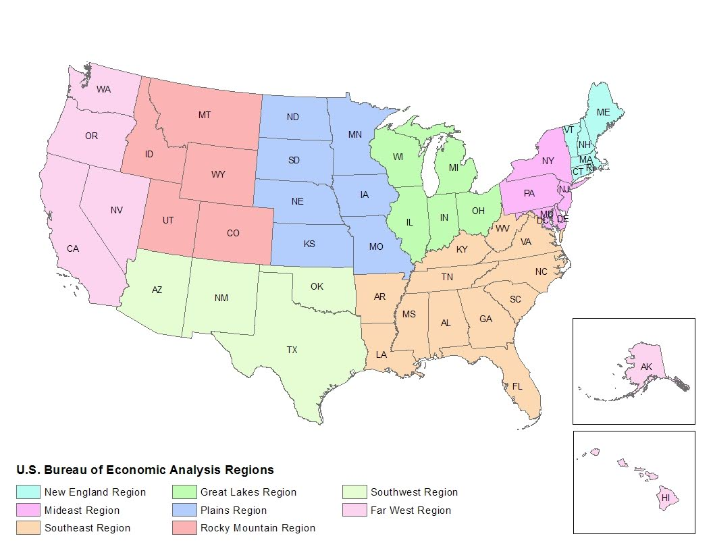
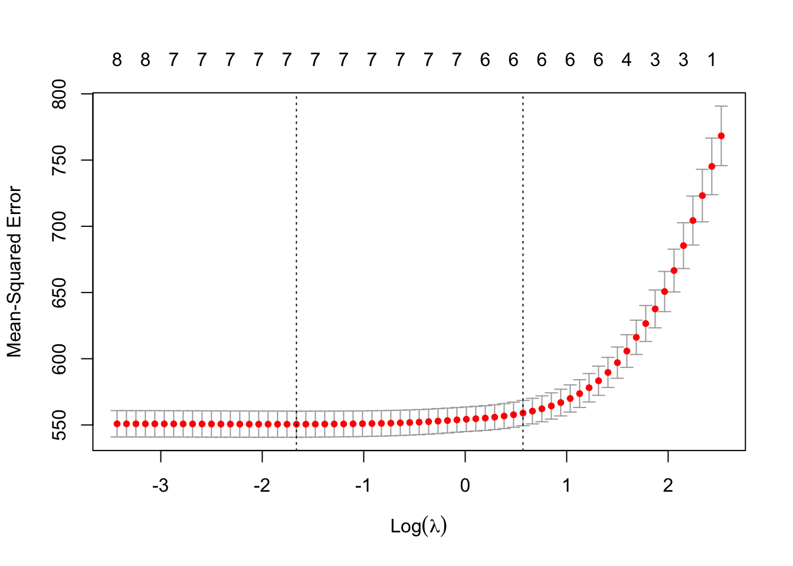
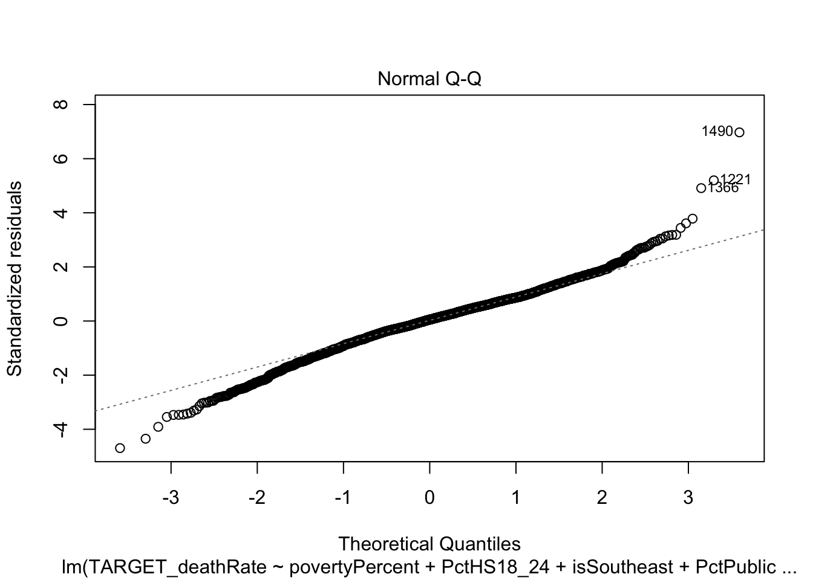
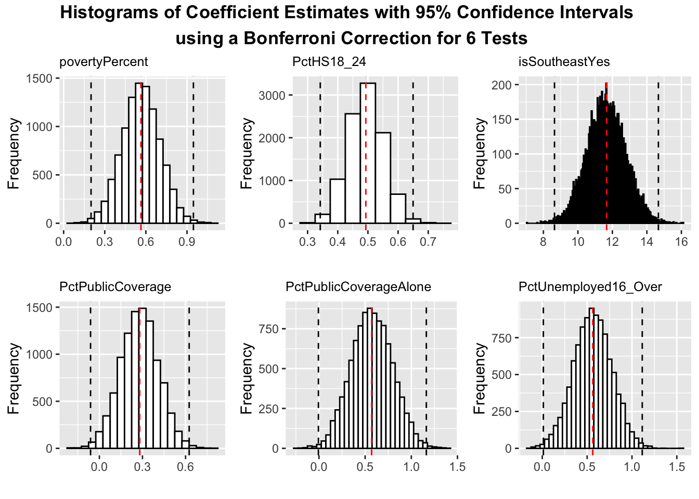
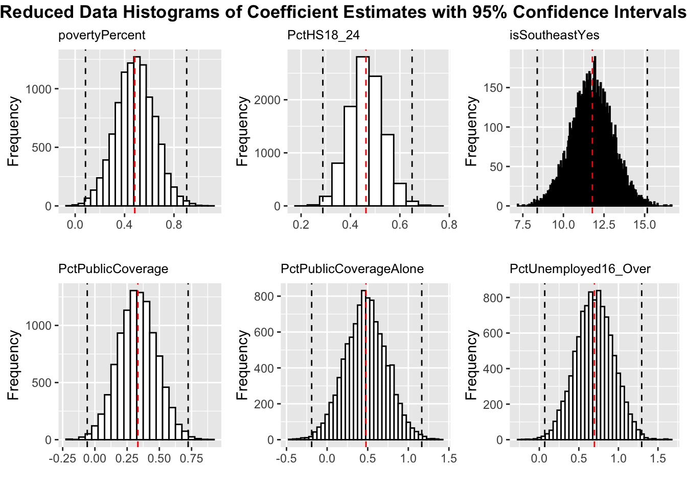
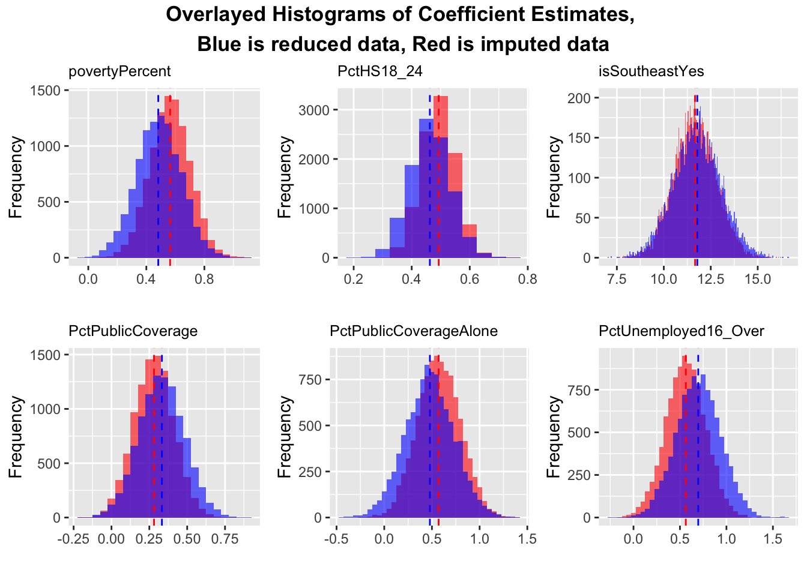

suppressMessages(library(tidyverse))
suppressMessages(library(usmap))
suppressMessages(library(scales))
suppressMessages(library(mice))
suppressMessages(library(glmnet))
suppressMessages(library(boot))
suppressMessages(library(grid))
suppressMessages(library(gridExtra))
suppressMessages(library(cowplot))Unraveling Socioeconomic Factors in the U.S. Cancer Incidence : A Linear Modeling Approach
Created by Brandon Rodriguez under the advising of Professor Aiden McLoughlin at UC Berkeley.
Introduction
Cancer is a leading cause of mortality in the United States, and understanding the factors that affect cancer mortality can help the federal government as well as state governments effectively allocate capital and resources in the correct areas. Using data on Cancer mortality and its factors, I hope to answer the research question: what socioeconomic and/or geographic factors most affect cancer mortality rates, and to what extent? Using my dataset, consisting of both yearly values and multi-year averages from cancer.gov, the American Community Survey, and clinicaltrials.gov, the focus of my project was causal inference on variables such as age, gender, race/ethnicity, socioeconomic status, geographic location, and more. Due to the issues of non-normality and linearity found in data exploration, I decided to use modeling tools that did not rely on these assumptions. Additionally, I focused on modeling tools that created a more parsimonious model, focusing on picking out the most impactful variables in exchange for less prediction accuracy.
The data set used consists of 3047 observations and 34 variables, where a unit of observation is a county in the United States. As mentioned previously, a variable can either be a value collected in a certain year, or an average over a period of years. For example, the dependent variable, “TARGET_deathRate” represents the Mean per capita (100,000) cancer mortalities between the years 2010 and 2016. In contrast, the variable “MedianAge” represents the median age of residents in a certain county coming from the 2013 Census Estimates. Since the aim of the study is causal inference, not prediction accuracy, as well as the difficulty of consistently measuring variables such as “MedianAge,” there does appear to be any significant temporal aspect to the results. The study is also done under the knowledge that the observations are perfectly independent, as state-wide trends can certainly affect specific variables compared to a different state, however this will be addressed by considering state and even region averages in our model. While there are gaps in certain variables due to not being collected in that county, for most variables this is insignificant and randomly placed (geographically) enough to consider the data set generalizable to the entire United States. Additionally, the use of multiple years in our data set will result in the results more robust and generalizable for the decade of 2010-2020, as well as possibly beyond that. Additional data not recorded in the dataset that may have improved the modeling is data on county occupation distributions, as it’s known that certain environmental factors, such as radiation, impact the incidence and thus death rate of cancer.
Modeling Tool Motivations
Modeling was largely divided into two parts: feature selection and coefficient inference, and the modeling techniques used for each section were Lasso regression and Bootstrap confidence intervals, respectively. For feature selection, initial variables were chosen on the basis of domain knowledge and exploratory data analysis, constituting an initial model. Domain knowledge was also used to pick out a list of possibly important features, and then Lasso regression was used to create a final model. By using Lasso, I was able to effectively choose between a great deal of additional features, as well as eliminate any initial variables that were found to be unimportant. Additionally, by using the lambda value one standard error away from the minimum lambda value, I was able to obtain a far more sparse model than other methods. By using Bootstrap inference, I was able to not only obtain parameter inference without a normality assumption, but also help justify the use of imputation on missing values. By using these modeling techniques, I was able to create an answer to my research question that was focused on the most important features impacting cancer mortality, as well as without using improbable assumptions.
Modeling Tool Assumptions
As mentioned prior, by using Lasso regression and Bootstrap inference, the assumptions I assumed about my model were homoskedasticity, linearity, and no excessive multicollinearity. I also am assuming that my sample is representative of the population.
Data Preprocessing
Unfortunately, the data does contain NA values, which were addressed by exclusion and imputation on certain variables. Since PctSomeCol18_24 (Percent of county residents ages 18-24 highest education attained: some college) has a NA rate of 74.99% I was comfortable excluding it, as it is too sparse to reasonably impute. PctEmployed16_Over (Percent of county residents ages 16 and over unemployed) has only a 4.99% NA rate. PctPublicCoverageAlone (Percent of county residents with government-provided health coverage alone) has a 19.99% NA rate, but seems too important to ignore if we wish to consider the status of coverage as a variable. All other variables do not contain NA values. I thus used MICE (Multiple Imputation by Chained Equations) to replace the NA values of these two variables with very likely substitutions using a method known as predictive mean matching. MICE operates under the assumption that the data missing is MAR (Missing at Random). Due to the data collection process (each row represents a county), the likely possible bias is that certain states refuse or fail to collect these variables in a systematic way, and thus the data is no longer MAR. I checked this assumption towards the end of modeling by considering the finalized model on both the imputed and reduced dataset (rows including NA’s for variables not excluded are removed), and assessed their similarities and differences. Regardless, variable selection will be done using the imputed dataset, assuming MAR, thus imputing 152 PctEmployed16_Over NA values and 609 PctPublicCoverageAlone NA values.
# Read data in and seprate State and County in to seperate columns, then edit any problematic entries and then create a new column of FIPS codes, that uniquelly identify a county
cancer_raw = read.csv("cancer_reg.csv")
cancer_edit = cancer_raw
cancer_edit <- cancer_edit %>% mutate(Target_div_Income = TARGET_deathRate/medIncome)
cancer_geo = cbind(cancer_edit, str_match(cancer_edit$Geography,"(.+), (.+)")[ ,-1])
colnames(cancer_geo)[37] ="State"
colnames(cancer_geo)[36] = "County"
cancer_geo[167,36] <- "Dona Ana County"
cancer_geo[821,36] <- "La Salle Parish"
codes <- rep(NULL, length(cancer_geo$County))
for (i in 1:length(cancer_geo$avgAnnCount)){
codes[i] = fips(state = cancer_geo$State[i], county = cancer_geo$County[i])
}
cancer_final = cbind(cancer_geo, fips = codes)moddat <- cancer_final
(colMeans(is.na(moddat)))*100 avgAnnCount avgDeathsPerYear TARGET_deathRate
0.000000 0.000000 0.000000
incidenceRate medIncome popEst2015
0.000000 0.000000 0.000000
povertyPercent studyPerCap binnedInc
0.000000 0.000000 0.000000
MedianAge MedianAgeMale MedianAgeFemale
0.000000 0.000000 0.000000
Geography AvgHouseholdSize PercentMarried
0.000000 0.000000 0.000000
PctNoHS18_24 PctHS18_24 PctSomeCol18_24
0.000000 0.000000 74.991795
PctBachDeg18_24 PctHS25_Over PctBachDeg25_Over
0.000000 0.000000 0.000000
PctEmployed16_Over PctUnemployed16_Over PctPrivateCoverage
4.988513 0.000000 0.000000
PctPrivateCoverageAlone PctEmpPrivCoverage PctPublicCoverage
19.986872 0.000000 0.000000
PctPublicCoverageAlone PctWhite PctBlack
0.000000 0.000000 0.000000
PctAsian PctOtherRace PctMarriedHouseholds
0.000000 0.000000 0.000000
BirthRate Target_div_Income County
0.000000 0.000000 0.000000
State fips
0.000000 0.000000 # Set reproducability seed and then impute data
set.seed(1)
trim = moddat[,-18]
imp <- mice(trim, m = 5, maxit = 50, meth = "pmm")Warning: Number of logged events: 505complete(imp)Feature Selection
Literature on socioeconomic factors affecting cancer mortality point to poverty, education, and race as some of the most important factors. In the 2017 paper “Socioeconomic and Racial/Ethnic Disparities in Cancer Mortality, Incidence, and Survival in the United States, 1950–2014: Over Six Decades of Changing Patterns and Widening Inequalities,” the authors concluded that individuals in lower income and education groups had significantly higher mortality and incidence rates (Singh and Jemal). The authors also noted that Blacks had higher mortality and incidence rates than other races, likely due to the interconnection of race and income. In the 2021 paper “Leading cancers contributing to educational disparities in cancer mortality in the US, 2017,” the authors concluded that there was a significant difference between the mortality rate between individuals with a bachelors degree and higher, and all education levels below that (Withrow, D. R Et al.). Since both these studies use data exclusively from the U.S., and are within the time frame of interest to us, I decided to use these conclusions to guide my variable selection. Prior visualization of the data set supports these conclusions as well as suggest a categorical variable indicating whether a given county is in the Southwest region. To define which states belong to the Southeast, I used the regions specified by the Bureau of Economic Analysis, who divide the United States into 8 regions (U.S. Bureau of Economic Analysis).

Additionally, the conclusions from the second paper suggest two new variables, PctNoHS18_24 (Percent of county residents ages 18-24 highest education attained: less than high school) and PctHS18_24 (Percent of county residents ages 18-24 highest education attained: high school diploma). While there are several other variables related to educational goals, such as percentage of county residents ages 18-24 who have attained a bachelors, the literature above suggests that residents with lower educational achievements tend to have a higher cancer mortality, while the opposite is not necessarily true. The variables for the initial model were thus povertyPercent (Percent of populace in poverty), PctBlack (Percent of county residents who identify as Black), and PctNoHS18 and PctHS18_24. For future investigation I decided to consider isSouthEast (Categorical variable indicating whether the county is in the South East), as well as the variables related to healthcare coverage, PctPublicCoverage (Percent of county residents with government-provided health coverage) and PctPublicCoverageAlone (Percent of county residents with government-provided health coverage alone), and a more nuanced poverty variable PctUnemployed16_Over (Percent of county residents ages 16 and over unemployed).
imputed <- complete(imp)
imputed_new <- imputedmod1 <- lm(data = imputed_new, TARGET_deathRate ~ povertyPercent + PctBlack + PctNoHS18_24 + PctHS18_24)Here is the summary of the initial model:
summary(mod1)
Call:
lm(formula = TARGET_deathRate ~ povertyPercent + PctBlack + PctNoHS18_24 +
PctHS18_24, data = imputed_new)
Residuals:
Min 1Q Median 3Q Max
-106.595 -13.332 1.245 14.515 164.404
Coefficients:
Estimate Std. Error t value Pr(>|t|)
(Intercept) 127.58734 2.10954 60.481 < 2e-16 ***
povertyPercent 1.66957 0.08312 20.087 < 2e-16 ***
PctBlack 0.13644 0.03527 3.869 0.000112 ***
PctNoHS18_24 -0.17345 0.05673 -3.058 0.002251 **
PctHS18_24 0.70898 0.04883 14.518 < 2e-16 ***
---
Signif. codes: 0 '***' 0.001 '**' 0.01 '*' 0.05 '.' 0.1 ' ' 1
Residual standard error: 24.21 on 3042 degrees of freedom
Multiple R-squared: 0.2402, Adjusted R-squared: 0.2392
F-statistic: 240.4 on 4 and 3042 DF, p-value: < 2.2e-16The initial fit was rather weak, with a R-squared of 0.24. To add variables of interest, I used Lasso regression using a Lambda 1 standard error away from the minimum residual deviance Lambda value, both of which will be obtained using cross-validation.
#First, code the Southeast variable for future use
new_england <- c("Connecticut", "Maine", "Massachusetts", "New Hampshire", "Rhode Island", "Vermont")
mideast <- c("Delaware", "District of Columbia", "Maryland", "New Jersey", "New York", "Pennsylvania")
great_lakes <- c("Illinois", "Indiana", "Michigan", "Ohio", "Wisconsin")
plains <- c("Iowa", "Kansas", "Minnesota", "Missouri", "Nebraska", "North Dakota", "South Dakota")
southeast <- c("Alabama", "Arkansas", "Florida", "Georgia", "Kentucky", "Louisiana", "Mississippi", "North Carolina", "South Carolina", "Tennessee", "Virginia", "West Virginia")
southwest <- c("Arizona", "New Mexico", "Oklahoma", "Texas")
rocky_mountain <- c("Colorado", "Idaho", "Montana", "Utah", "Wyoming")
far_west <- c("Alaska", "California", "Hawaii", "Nevada", "Oregon", "Washington")
get_region <- function(state) {
if (state %in% new_england) {
return("New England")
} else if (state %in% mideast) {
return("Mideast")
} else if (state %in% great_lakes) {
return("Great Lakes")
} else if (state %in% plains) {
return("Plains")
} else if (state %in% southeast) {
return("Southeast")
} else if (state %in% southwest) {
return("Southwest")
} else if (state %in% rocky_mountain) {
return("Rocky Mountain")
} else if (state %in% far_west) {
return("Far West")
} else {
return(NA)
}
}
imputed_new$Region <- sapply(imputed_new$State, get_region)
imputed_new$isSoutheast <- ifelse(imputed_new$Region == "Southeast", "Yes", "No")Here is the graph of Lambda values, with the minimum Lambda at 0.18, and the 1 SE Lambda value at 1.767:
#Create Lasso Lambda graph
set.seed(1)
y = imputed_new$TARGET_deathRate
x = data.matrix(imputed_new[, c('povertyPercent', 'PctBlack', 'PctHS18_24','PctNoHS18_24', 'isSoutheast','PctPublicCoverage','PctPublicCoverageAlone', "PctUnemployed16_Over")])
cv_model <- cv.glmnet(x, y, alpha = 1)
plot(cv_model)
#Assign 1se lambda and then run Lasso using it
min_lambda <- cv_model$lambda.min
se_lambda <- cv_model$lambda.1se
best_model <- glmnet(x, y, alpha = 1, lambda = se_lambda)
coef(best_model)9 x 1 sparse Matrix of class "dgCMatrix"
s0
(Intercept) 124.2552434
povertyPercent 0.4504766
PctBlack .
PctHS18_24 0.3404665
PctNoHS18_24 .
isSoutheast 9.5552934
PctPublicCoverage 0.1653959
PctPublicCoverageAlone 0.6901461
PctUnemployed16_Over 0.3542458According to the Lasso results, PctBlack and PctNoHS18_24 were eliminated, while PctPublicCoverage, PctPublicCoverageAlone, and PctUnemployed16_Over were admitted. The fit improved somewhat, with an R-squared of 0.287. Interpreting these results, it appears that for this data set, variables related to healthcare coverage and unemployment are better predictors of cancer mortality than the percentage of black residents as well as the percentage of residents 18-24 that have not graduated high school. I don't find this contradictory to prior literature cited that concludes a racial and educational divide in cancer mortality, as not only does Lasso judge on prediction accuracy, but it's more likely that these variables are correlated in some way, and the variables related to healthcare coverage and poverty are more comprehensive due to not segregating by education level or race.
Coefficient Inference
For inference on our coefficient values, I first decided to check normality assumptions using a Q-Q plot before deciding whether or not to conduct inference using a parametric or nonparametric approach.
finmod <- lm(data = imputed_new, TARGET_deathRate ~ povertyPercent + PctHS18_24 + isSoutheast + PctPublicCoverage + PctPublicCoverageAlone + PctUnemployed16_Over)
summary(finmod)
Call:
lm(formula = TARGET_deathRate ~ povertyPercent + PctHS18_24 +
isSoutheast + PctPublicCoverage + PctPublicCoverageAlone +
PctUnemployed16_Over, data = imputed_new)
Residuals:
Min 1Q Median 3Q Max
-110.107 -13.052 1.293 14.243 163.409
Coefficients:
Estimate Std. Error t value Pr(>|t|)
(Intercept) 122.3032 2.4841 49.234 < 2e-16 ***
povertyPercent 0.5638 0.1207 4.672 3.12e-06 ***
PctHS18_24 0.4931 0.0497 9.922 < 2e-16 ***
isSoutheastYes 11.6651 1.0157 11.485 < 2e-16 ***
PctPublicCoverage 0.2811 0.1109 2.535 0.01128 *
PctPublicCoverageAlone 0.5704 0.1827 3.123 0.00181 **
PctUnemployed16_Over 0.5630 0.1730 3.253 0.00115 **
---
Signif. codes: 0 '***' 0.001 '**' 0.01 '*' 0.05 '.' 0.1 ' ' 1
Residual standard error: 23.46 on 3040 degrees of freedom
Multiple R-squared: 0.2866, Adjusted R-squared: 0.2852
F-statistic: 203.5 on 6 and 3040 DF, p-value: < 2.2e-16Here is the Q-Q plot:
plot(finmod, which =2)
While the line appears to fit well towards the center of the plot, the line veers off heavily towards the ends. For greater inference, I decided to use a Shapiro-Wilk hypothesis test on the residual values to test for normality, resulting in a p-value coming out to <2e-16, thus rejecting the null hypothesis that our fitted results are normal.
shapiro.test(finmod$residuals)
Shapiro-Wilk normality test
data: finmod$residuals
W = 0.98178, p-value < 2.2e-16For inference, I thus chose to use a Bootstrap algorithm to understand the sampling distribution of our coefficients, and develop a confidence interval to use in the interpretation of our final model. Additionally, using a percentile confidence interval from these sampling distributions, I then tested the null hypothesis that each variable’s value is actually 0. Since I would thus be performing 6 hypothesis tests, I applied a Bonferroni correction to my significance level of 0.05, thus making the confidence interval from the 0.004166667 quantile to the 0.9958333 quantile. Note that applying this Bonferroni correction results in a significantly larger confidence interval than if not applied, as the original confidence interval would thus be from the 0.025 quantile to the 0.975 quantile.
Here is a figure of all the bootstrapped sampling distributions (10000 replications), along with the confidence intervals and original coefficient estimates marked on the graph:
nboot <- 10000
set.seed(1)
# Create a function to calculate the coefficients using the bootstrap
coef.boot <- function(data, indices) {
model <- lm(TARGET_deathRate ~ povertyPercent + PctHS18_24 + isSoutheast + PctPublicCoverage + PctPublicCoverageAlone + PctUnemployed16_Over, data = data[indices, ])
return(coef(model)[-1]) # exclude intercept column
}
# Perform the bootstrap using the defined function
boot.results <- boot(data = imputed_new, statistic = coef.boot, R = nboot)
# Convert bootstrap results to a data frame
boot.df <- as.data.frame(boot.results$t)
colnames(boot.df) <- c("povertyPercent", "PctHS18_24", "isSoutheastYes","PctPublicCoverage", "PctPublicCoverageAlone", "PctUnemployed16_Over")
# Get coefficient estimates from original model
finmod <- lm(TARGET_deathRate ~ povertyPercent + PctHS18_24 + isSoutheast + PctPublicCoverage + PctPublicCoverageAlone + PctUnemployed16_Over, data = imputed_new)
coef.estimates <- coef(finmod)[-1 , drop = TRUE]
# Create a function to plot histograms with quantile and coefficient lines and a title
plot.hist <- function(x, coef.est, varname) {
p <- ggplot(data.frame(x), aes(x = x)) +
geom_histogram(binwidth = 0.05, color = "black", fill = "white") +
geom_vline(xintercept = quantile(x, probs = c(0.004166667, 0.9958333)), linetype = "dashed") +
geom_vline(xintercept = coef.est, color = "red", linetype = "dashed") +
xlab("") + ylab("Frequency") +
ggtitle(varname)+
theme(plot.title = element_text(size = 9.5))
return(p)
}
# Create a list of plots for each column in boot.df with titles
plot.list <- mapply(plot.hist, x = boot.df, coef.est = coef.estimates, varname = names(boot.df), SIMPLIFY = FALSE)
# Combine the plots into a single figure with a title
grid.arrange(grobs = plot.list, ncol = 3, top = textGrob('Histograms of Coefficient Estimates with 95% Confidence Intervals \n using a Bonferroni Correction for 6 Tests', gp=gpar(fontsize=13, fontface = 2))
)
From initial inspection, it's clear that povertyPercent, PctHS18_24, and isSoutheastYes all reject the null hypothesis that the respective coefficient effect is actually 0. Upon inspecting PctUnemployed16_Over's bottom quantile, (0.01195514), it appears this variable as well rejects the null hypothesis that the respective coefficient effect is actually 0. PctPublicCoverage and PctPublicCoverageAlone both fail to reject the hypothesis that the coefficient effect is actually 0. Based on these inference results, each of the variables with a confidence interval that doesn't include 0 does have some effect on cancer mortality, while we cannot for certain say the same for PctPublicCoverage and PctPublicCoverageAlone, whose confidence interval does contain 0. These conclusions of course are contingent on confidence level selected (0.05 with a Bonferroni Correction), the randomness of the Bootstrap (10000 replications), as well as the randomness of the imputation process.
Before variable interpretation, I investigated the assumption of MAR (Missing at Random), using the same bootstrap procedure discussed previously. If indeed the data imputed is MAR, the reduced data set bootstrap sampling distribution should look similar, or hopefully the same as the imputed data set bootstrap sampling distributions. Since only one of the variables with NA values was used in the final model, PctPrivateCoverageAlone, I only removed rows that have an NA in this variable, instead of all rows with an NA. Comparing the reduced data set to the imputed data set, the reduced data set lost 609 observations. I then ran the same bootstrap procedure as before, and then overlap the sampling distributions for each data set:
# Create reduced data set and apply the Southeast column used previously
reduced <- na.omit(trim[,-21])
nrow(reduced) - nrow(imputed_new)[1] -609reduced$Region <- sapply(reduced$State, get_region)
reduced$isSoutheast <- ifelse(reduced$Region == "Southeast", "Yes", "No")set.seed(1)
nboot <- 10000
# Create a function to calculate the coefficients using the bootstrap
coef.boot <- function(data, indices) {
model <- lm(TARGET_deathRate ~ povertyPercent + PctHS18_24 + isSoutheast + PctPublicCoverage + PctPublicCoverageAlone + PctUnemployed16_Over, data = data[indices, ])
return(coef(model)[-1]) # exclude intercept column
}
# Perform the bootstrap using the defined function
boot.results.reduce <- boot(data = reduced, statistic = coef.boot, R = nboot)
# Convert bootstrap results to a data frame
boot.df.reduce <- as.data.frame(boot.results.reduce$t)
colnames(boot.df.reduce) <- c("povertyPercent", "PctHS18_24", "isSoutheastYes","PctPublicCoverage", "PctPublicCoverageAlone", "PctUnemployed16_Over")
# Get coefficient estimates from original model
finmod.reduce <- lm(TARGET_deathRate ~ povertyPercent + PctHS18_24 + isSoutheast + PctPublicCoverage + PctPublicCoverageAlone + PctUnemployed16_Over, data = reduced)
coef.estimates.reduce <- coef(finmod.reduce)[-1 , drop = TRUE]
# Create a function to plot histograms with quantile and coefficient lines and a title
plot.hist <- function(x, coef.est, varname) {
p <- ggplot(data.frame(x), aes(x = x)) +
geom_histogram(binwidth = 0.05, color = "black", fill = "white") +
geom_vline(xintercept = quantile(x, probs = c(0.004166667, 0.9958333)), linetype = "dashed") +
geom_vline(xintercept = coef.est, color = "red", linetype = "dashed") +
xlab("") + ylab("Frequency") +
ggtitle(varname)+
theme(plot.title = element_text(size = 9.5))
return(p)
}
# Create a list of plots for each column in boot.df with titles
plot.list <- mapply(plot.hist, x = boot.df.reduce, coef.est = coef.estimates.reduce, varname = names(boot.df.reduce), SIMPLIFY = FALSE)
# Combine the plots into a single figure with a title
grid.arrange(grobs = plot.list, ncol = 3, top = textGrob('Reduced Data Histograms of Coefficient Estimates with 95% Confidence Intervals', gp=gpar(fontsize=13, fontface = 2))
)
# Combine the two bootstrapped data frames
boot.df_combined <- bind_rows(
boot.df %>% mutate(group = "Original"),
boot.df.reduce %>% mutate(group = "Reduced")
)
idx = 1:nrow(boot.df_combined)
# Create a function to plot histograms with quantile and coefficient lines and a title
plot.hist <- function(x, coef.est, coef.est.reduce, varname) {
group <- ifelse(idx <= nrow(boot.df), "Original", "Reduced")
p <- ggplot(data.frame(x, group = group), aes(x = x)) +
geom_histogram(binwidth = 0.05, alpha = 0.6, aes(fill = group), position = "identity") +
geom_vline(xintercept = coef.est, color = "red", linetype = "dashed") +
geom_vline(xintercept = coef.est.reduce, color = "blue", linetype = "dashed") +
xlab("") + ylab("Frequency") +
ggtitle(varname) +
theme(plot.title = element_text(size = 9.5)) +
scale_fill_manual(values = c("Original" = "red", "Reduced" = "blue")) + theme(legend.position = "none")
return(p)
}
# Create a list of plots for each column in boot.df with titles
plot.list <- mapply(plot.hist, x = boot.df_combined[,-7], coef.est = coef.estimates, coef.est.reduce = coef.estimates.reduce, varname = names(boot.df_combined)[-7], SIMPLIFY = FALSE)
grid.arrange(grobs = plot.list, ncol = 3, top = textGrob('Overlayed Histograms of Coefficient Estimates, \nBlue is reduced data, Red is imputed data', gp=gpar(fontsize=13, fontface = 2)))
As seen in the graphs, the reduced data set bootstrap distributions are extremely similar to the imputed data set bootstrap distributions, helping confirm the assumption that the data is MAR (Missing at Random) and not biasing the estimates. Additionally, the coefficient estimates for the reduced and imputed data sets are almost the same, deviating less than 0.2 for every variable.
Variable Interpretation/Conclusion
Here is the summary of my final model after variable selection:
summary(finmod)
Call:
lm(formula = TARGET_deathRate ~ povertyPercent + PctHS18_24 +
isSoutheast + PctPublicCoverage + PctPublicCoverageAlone +
PctUnemployed16_Over, data = imputed_new)
Residuals:
Min 1Q Median 3Q Max
-110.107 -13.052 1.293 14.243 163.409
Coefficients:
Estimate Std. Error t value Pr(>|t|)
(Intercept) 122.3032 2.4841 49.234 < 2e-16 ***
povertyPercent 0.5638 0.1207 4.672 3.12e-06 ***
PctHS18_24 0.4931 0.0497 9.922 < 2e-16 ***
isSoutheastYes 11.6651 1.0157 11.485 < 2e-16 ***
PctPublicCoverage 0.2811 0.1109 2.535 0.01128 *
PctPublicCoverageAlone 0.5704 0.1827 3.123 0.00181 **
PctUnemployed16_Over 0.5630 0.1730 3.253 0.00115 **
---
Signif. codes: 0 '***' 0.001 '**' 0.01 '*' 0.05 '.' 0.1 ' ' 1
Residual standard error: 23.46 on 3040 degrees of freedom
Multiple R-squared: 0.2866, Adjusted R-squared: 0.2852
F-statistic: 203.5 on 6 and 3040 DF, p-value: < 2.2e-16quantile(boot.df$povertyPercent, probs = c(0.004166667, 0.9958333))0.4166667% 99.58333%
0.2000268 0.9466988 quantile(boot.df$PctHS18_24, probs = c(0.004166667, 0.9958333))0.4166667% 99.58333%
0.3419795 0.6497332 quantile(boot.df$isSoutheastYes, probs = c(0.004166667, 0.9958333))0.4166667% 99.58333%
8.642598 14.666479 quantile(boot.df$PctPublicCoverage, probs = c(0.004166667, 0.9958333)) 0.4166667% 99.58333%
-0.06139477 0.62534342 quantile(boot.df$PctPublicCoverageAlone, probs = c(0.004166667, 0.9958333)) 0.4166667% 99.58333%
-0.006147866 1.162750944 quantile(boot.df$PctUnemployed16_Over, probs = c(0.004166667, 0.9958333))0.4166667% 99.58333%
0.01195514 1.11447750 Based on the results of my modeling using Lasso regression and Bootstrap inference, I came to the following conclusions to my research question. For every percent increase of a county’s population in poverty, on average the cancer mortality per 100,000 residents in a county increases by approximately 0.563 individuals (CI: 0.2000-0.9467). For every percent increase of county residents ages 18-24 who's highest education attained is a high school diploma, on average the cancer mortality per 100,000 residents increases by 0.4931 (CI: 0.3419-0.6497). Compared to other regions of the United States, Southeast countries have on average 11.66 (CI: 8.642-14.6664) more cancer deaths per 100,000 residents. For every percent increase of county residents with government-provided health coverage, on average the cancer mortality per 100,000 residents in a county increases by approximately 0.2811 individuals (CI: -0.06139-0.6253). For every percent increase of county residents with government-provided health coverage alone, on average the cancer mortality per 100,000 residents in a county increases by approximately 0.5704 individuals (CI: -0.00614-1.1627). Finally, for every percent increase of county residents ages 16 and over unemployed, on average the cancer mortality per 100,000 residents in a county increases by approximately 0.563 individuals (CI: 0.0119-1.1144).
From these conclusions, the most important finding is that counties in the Southeast region of the United States have significantly higher cancer mortality than other regions of the United States. It is important to note that these conclusions have some limitations, including the fact that the data ends at 2016 and only includes deaths from lung cancer, and that the modeling assumes no excessive collinearity and utilizes techniques such as Lasso or Bootstrapping, which have an aspect of randomness. Regardless, from these conclusions I would suggest further research on specifically the Southeast region of the United States, to better understand the specific causes of such higher mortality rates. Additionally, based on the results, education and poverty were identified as significant predictors of cancer mortality, suggesting a few areas of focus to start research on. Overall, the results highlight the need for federal action to aid these Southeast communities, which in turn will reduce cancer mortality overall in the United States.
Data Citation
N.Rippner. Cancer Trials, 2017. Retrieved from http://data.world/exercises/
linear-regression-exercise-1/workspace/file?filename=cancer_reg.csv.
Sources Cited
Singh, G. K., & Jemal, A. (2017). Socioeconomic and Racial/Ethnic Disparities in Cancer Mortality, Incidence, and Survival in the United States, 1950-2014: Over Six Decades of Changing Patterns and Widening Inequalities. Journal of environmental and public health, 2017, 2819372. https://doi.org/10.1155/2017/2819372
U.S. Bureau of Economic Analysis. (n.d.). Regional economic accounts. Iowa State University.https://www.icip.iastate.edu/maps/refmaps/bea
Withrow, D. R., Freedman, N. D., Gibson, J. T., Yu, M., Nápoles, A. M., Berrington de González, A., & Shiels, M. S. (2021). Leading cancers contributing to educational disparities in cancer mortality in the US, 2017. Cancer causes & control : CCC, 32(11), 1193–1196. https://doi.org/10.1007/s10552-021-01471-9